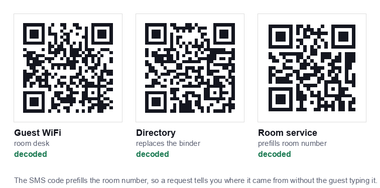

Hotels have a structural advantage over most businesses using QR codes: a guest journey with clearly defined moments. Arrival, settling into the room, needing something, and leaving. A code that matches one of those moments gets used. A code that sits somewhere generic does not.
This guide covers which codes are worth deploying, where they belong, and the operational details that decide whether they save your front desk time or generate more calls.

The codes worth deploying
1. Guest WiFi, the highest value code in the building
Front desks spend a remarkable amount of time repeating a WiFi password. A code in the room and at reception removes almost all of it, and guests appreciate it immediately because connectivity is the first thing they want.
Generate it with our WiFi QR code generator, pointed at your guest network only, never the network carrying your property management system, door locks or payment terminals.
One caveat specific to hotels: if your guest WiFi uses a captive portal, a sign in page requiring a room number or terms acceptance, a QR code cannot bypass it. The code will connect the device to the network, then the portal appears. That is acceptable, but print a line explaining the extra step or you will get calls saying the code is broken.
2. Digital directory, replacing the in room binder
The printed compendium in the drawer is expensive to produce, out of date within a month, and rarely opened. A code on the desk opening a mobile page can carry breakfast times, restaurant hours, spa booking, checkout procedure, local recommendations and the housekeeping schedule.
Use a static URL code pointing at a page on your own domain. Then you update the page whenever anything changes, and every code in every room stays correct without reprinting.
3. Room service and requests
A code that opens an ordering page, or an SMS code prefilled with the room number, lets guests request towels or order food without a phone call. Prefilling the room number is the detail that makes this work operationally, you know instantly where the request came from.
4. Feedback and reviews
Place this at checkout, not in the room. A code at the front desk or on the folio, once the stay has gone well, converts far better than one sitting on a desk for three days. The wording rules matter here, our guide to review QR codes covers what you may and may not ask for.
5. Contactless check in
A code in the lobby opening your check in flow reduces queues at peak arrival times. Treat it strictly as an alternative to the desk, never a replacement, see the accessibility section below.
Where each code belongs
| Code | Placement | Print size |
|---|---|---|
| Guest WiFi | Room desk card and reception counter | 4 to 5cm |
| Digital directory | Room desk, bedside, back of door | 4 to 5cm |
| Room service | Bedside table, desk | 4cm |
| Feedback | Front desk, checkout folio | 3 to 4cm |
| Check in | Lobby stand, entrance | 15 to 20cm |
| Restaurant menu | Table talkers | 4 to 5cm |
Lobby codes are read from a distance and need to be far larger than most properties print them. The rule is roughly one tenth of the scanning distance, our sizing guide has the full table.
Accessibility is not optional
Hotels serve a wider demographic than almost any other business, and QR only systems exclude people:
- Guests without a smartphone: skewing older.
- International guests with no data allowance who cannot load a page before connecting to WiFi, which is precisely why the WiFi code must work offline.
- Visually impaired guests: for whom a code is invisible unless the destination page is built properly for screen readers.
- Guests with dexterity difficulties who find holding a phone steady at the right distance genuinely hard.
Every QR code in a hotel needs a physical alternative. The WiFi password printed as text under the code. A staffed desk alongside contactless check in. A printed directory available on request. The code should be the fast path, never the only path.
Printing and durability in a hotel environment
- Use acrylic holders or laminated cards: not loose stickers. Stickers peel, and a peelable code is a code someone can cover with their own, a genuine security concern covered in our guide on QR code safety.
- Matte finish only. Glossy cards reflect room lighting directly into the camera. This is the single most common cause of a code that "works in the day and not at night".
- Check during turndown or housekeeping. Add a card check to the room checklist, damaged corner markers break scanning entirely.
- Keep spares at housekeeping. A drawer of replacement cards costs almost nothing and prevents a damaged card sitting in a room for weeks.
Operational mistakes to avoid
- Changing the WiFi password without reprinting. The password lives inside the image, so a change invalidates every card in the building. Build reprinting into the process, and use holders you can slide new cards into.
- Pointing directory codes at a PDF. Pinching and zooming a PDF on a phone is unpleasant enough that guests will call the desk instead.
- Unlabelled codes. A bare code gets ignored. "Scan for WiFi" and "Scan for hotel information" are different codes and must say so.
- Depending on a subscription service. If a dynamic code provider lapses, every card in every room dies at once. Static codes pointing at your own domain avoid this entirely.
- Forgetting the restaurant. Hotel restaurants are often run separately and end up with an inconsistent system, the same rules from our café and restaurant guide apply there.
A sensible rollout order
- Guest WiFi first. Highest value, lowest effort, immediate reduction in front desk interruptions. Test on a phone that has forgotten the network, a connected phone will appear to work regardless.
- Digital directory second. Build the page before printing anything, and make sure it works well on a phone.
- Test in a handful of rooms for two weeks. Ask housekeeping and the front desk what guests actually say.
- Then roll out property wide: and add feedback and service codes once the basics are proven.
Start with the code that pays for itself immediately: the WiFi QR code generator is free, requires no account, and your network password never leaves the browser.